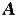
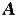

The attribute table
Many components have attributes, which are properties for configuring how the component behaves or appears. The attribute table is for viewing and displaying a component's attribute values.
To select which component's attributes you wish to view, click the component using the Edit tool (). (You can also right-click or control-click the component and choose Show Attributes from the popup menu. Also, manipulating a component via the Poke tool ( ) or the Text tool () will display that component's attributes.)
) or the Text tool () will display that component's attributes.)
The below screen shot demonstrates what things look like after selecting the upper input of our XOR circuit and scrolling down to view the Label Font attribute.

To modify an attribute value, click on the value. The interface for modifying the attribute will depend on which attribute you are changing; in the case of the Label Font attribute, a dialog box will appear for selecting the new font; but some attributes (like Label) will allow you to edit the value as a text field, while others (like Label Location) will display a drop-down menu from which to select the value.
Each component type has a different set of attributes; to learn what they mean, go to the relevant documentation in the Library Reference.
If you've selected multiple components using the Edit tool (), then the attribute table will display attributes that are shared among all the selected components (excluding any wires). If the selected components don't all have the same value for the attribute, then the displayed value will be blank. You can change the value for all selected components' attribute at once by using the attribute table.
Next: Tool attributes.